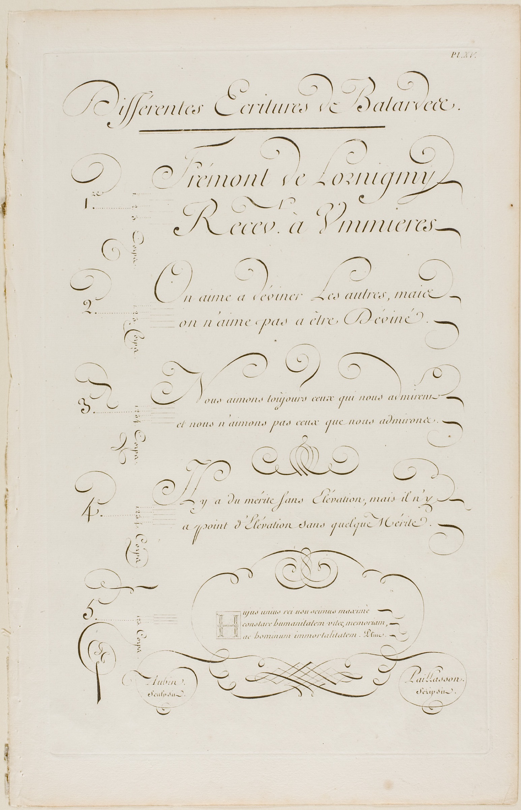
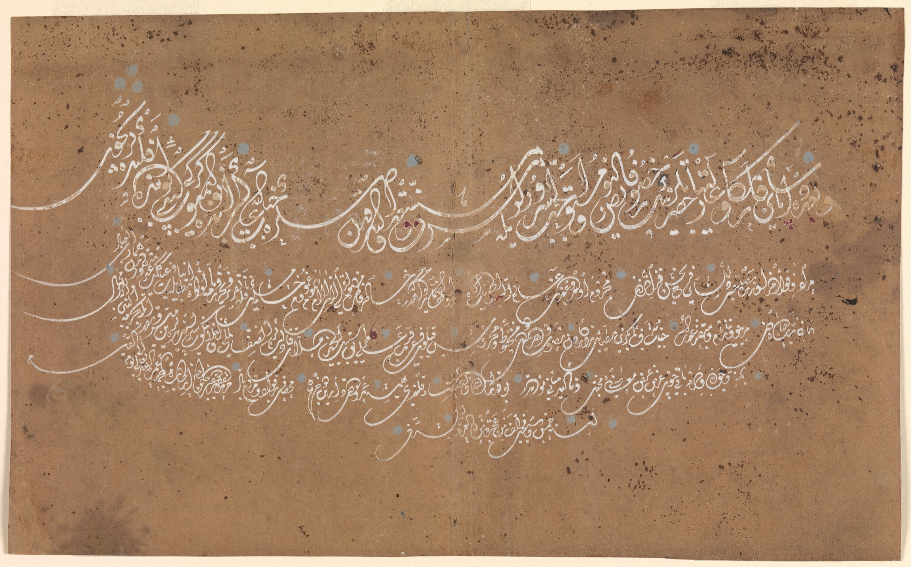
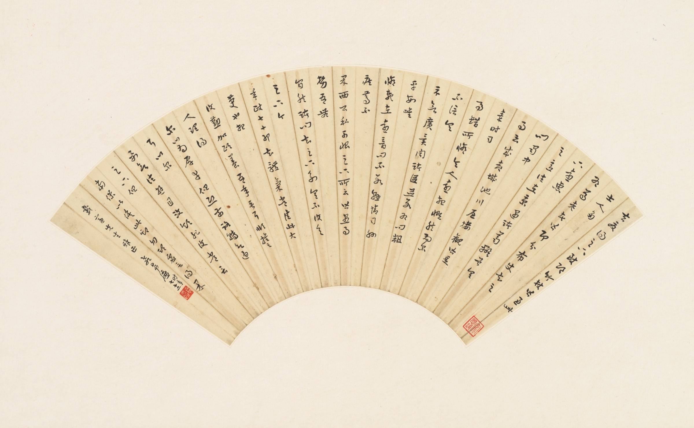
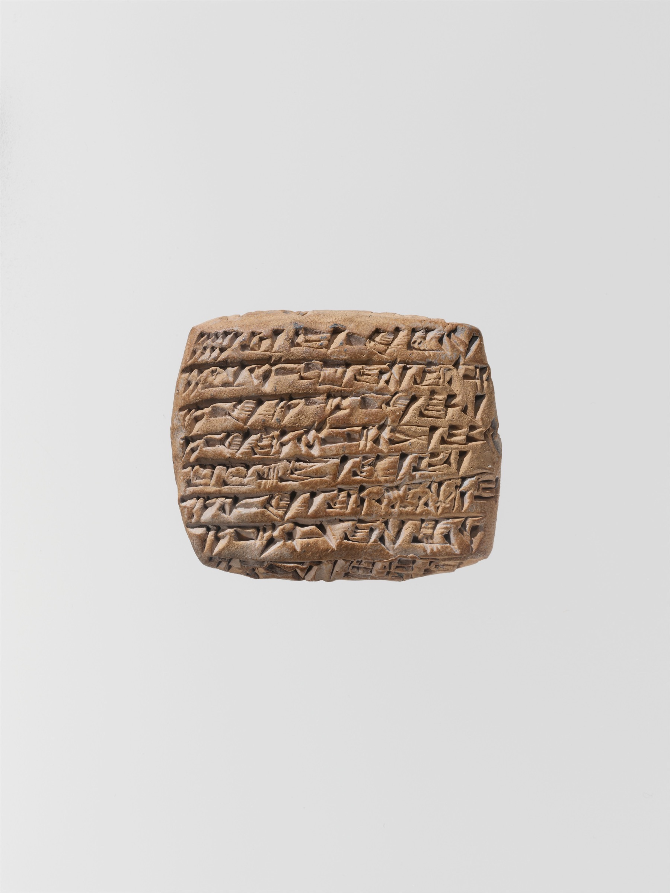

Spécialisés par matière
Arbitrage, fusions-acquisitions, droit social, fiscal, propriété intellectuelle : votre dossier va à un traducteur qui maîtrise la terminologie de votre domaine, jamais à un généraliste.




Legal 230 traduit vos contrats, actes et pièces par des juristes devenus traducteurs, relus par un second expert.
Écriture 1 sur 4
Arbitrage, fusions-acquisitions, droit social, fiscal, propriété intellectuelle : votre dossier va à un traducteur qui maîtrise la terminologie de votre domaine, jamais à un généraliste.
Chaque traducteur est diplômé, évalué sur deux matières et deux langues avant d'intégrer l'équipe, et traduit uniquement vers sa langue maternelle.
Aucune traduction ne part sans la relecture d'un second traducteur spécialisé. En cas de doute, nous reprenons sans frais et relivrons en priorité.
Du français et de l'anglais jusqu'aux langues rares, en traduction libre ou assermentée près une Cour d'appel, avec légalisation ou apostille si le dossier part à l'étranger.
Vous déposez vos pièces sur le portail sécurisé. Devis en 30 minutes, 24h/24, week-ends compris.
Un traducteur expert de votre matière prend le dossier, avec un lexique propre à votre projet. Pour les gros volumes, notre IA juridique accélère le travail, sans jamais livrer seule.
Un second traducteur spécialisé relit, corrige et valide chaque mot avant livraison.
Dans le délai convenu, mise en page conservée à l'identique. Retours sous 24 heures, correction sans frais si besoin.
langues, en traduction libre ou assermentée
traducteurs experts du droit, souvent anciens juristes ou avocats
traductions juridiques par an
pour cent de clients satisfaits
sur 5, d'après 87 avis vérifiés
minutes pour recevoir un devis, à toute heure
Un traducteur expert traite environ 2 000 mots par jour ouvré, 5 000 à 6 000 en traitement prioritaire. Saisissez votre volume pour un délai indicatif.
12 matières, 4 métiers accompagnés : avocats, directions juridiques, notaires, commissaires de justice.
« Laterminologied'arbitrage est maîtriséeà laperfection »
Un avocatarbitrage internationalcabinet d'affaires, Paris
Devis en 30 minutes, à toute heure. Vos pièces restent confidentielles, du premier échange à la livraison.
Demander un devis